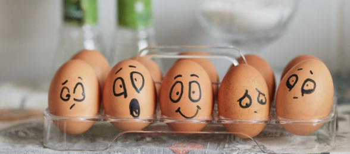
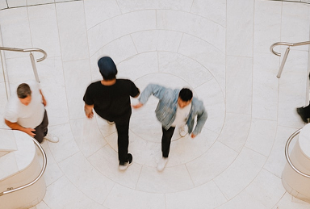

Эмоциональное выгорание — стадии и симптомы, методы восстановления и профилактики
Изначально термин «эмоциональное выгорание» применялся исключительно в профессиональной сфере и относился...

Изначально термин «эмоциональное выгорание» применялся исключительно в профессиональной сфере и относился...
Один из самых важных навыков, которые может дать работа с психотерапевтом — умение в разных ситуациях...
Изначально термин «эмоциональное выгорание» применялся...
Один из самых важных навыков, которые может дать работа с психотерапевтом...
Клиенты часто спрашивают, как контролировать свои негативные эмоции.
Изначально термин «эмоциональное я...
Один из самых важных навыков, которые может дать работа...

Клиенты часто спрашивают, как контролировать свои негативные эмоции.